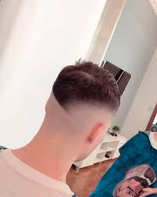

Cortes Modelos
!Son cortes a modo ilustrativo¡

Taper Fade
Taper fade es un degradado gradual que reduce la longitud del cabello desde la parte superior de la cabeza hasta los lados y la nuca

Buzz Cut
Se refiere a un corte de pelo muy corto que se realiza con máquina, a menudo de longitud uniforme en toda la cabeza.

Azucarame la Manbreta
Es un corte moderno y arriesgado que ha ganado popularidad entre jóvenes que buscan un estilo atrevido y asimétrico.